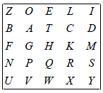

Die Playfair-Verschlüsselung ist ein sehr bekanntes bigraphisches Substitutionsverfahren. Es wurde hauptsächlich im ersten Weltkrieg vom britischen Militär eingesetzt.
Das Playfair-Verfahren ist wohl das bekannteste bigraphische monoalphabetische Substitutionsverfahren.
Eine 5x5-Matrix (Playfair-Matrix) wird mit dem Alphabet gefüllt, z.B. erst mit den verschiedenen Zeichen eines Schlüsselwortes, dann mit den restlichen Buchstaben des Alphabets. Der Klartext wird in Buchstabenpaare unterteilt: Diese Paare werden dann nach folgenden Regeln durch andere Paare ersetzt:
Als Beispiel wird der Text „SIMONIEX“ („X“ als Füller wegen der Aufteilung in Paare) mit dem Schlüsselwort „ZOELIBAT“ verschlüsselt. Die Playfair-Matrix sieht dann folgendermaßen aus:

Aus „SIMONIEX“ wird „SI MO NI EX“. Z. B. wird nun „SI“ nach der ersten Regel zu „YD“. Der komplette verschlüsselte Text ist dann „YD GI SZ LW“.
Bei der Rücksubstitution der Buchstabenpaarsubstitutionen muss dieselbe Playfair-Matrix verwendet werden und die Regeln umgekehrt werden (trivial).